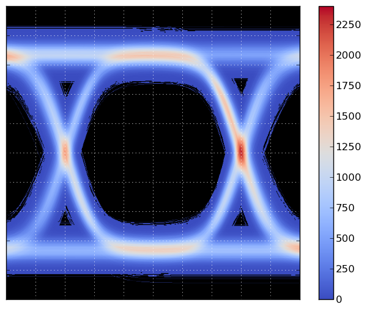

The code below generates the following plot:
The main script generates `num_traces` traces, and on a grid of 600x600, it counts the number times a trace crosses a grid point. The grid is then plotted using matplotlib’s imshow() function. The counting is performed using Bresenham’s line algorithm (http://en.wikipedia.org/wiki/Bresenham%27s_line_algorithm), to ensure that the counting is correct, and steep parts of the curve don’t result in missed counts.
Bresenham’s algorithm is slow in pure Python, so a Cython version is included. If you do not build the Cython version of the Bresenham code, be sure to reduce `num_traces` before running the program!
Here’s the main demo script, eye_demo.py.
#!python
import numpy as np
use_fast = True
try:
from brescount import bres_curve_count
except ImportError:
print "The cython version of the curve counter is not available."
use_fast = False
def bres_segment_count_slow(x0, y0, x1, y1, grid):
"""Bresenham's algorithm.
The value of grid[x,y] is incremented for each x,y
in the line from (x0,y0) up to but not including (x1, y1).
"""
nrows, ncols = grid.shape
dx = abs(x1 - x0)
dy = abs(y1 - y0)
sx = 0
if x0 < x1:
sx = 1
else:
sx = -1
sy = 0
if y0 < y1:
sy = 1
else:
sy = -1
err = dx - dy
while True:
# Note: this test is moved before setting
# the value, so we don't set the last point.
if x0 == x1 and y0 == y1:
break
if 0 <= x0 < nrows and 0 <= y0 < ncols:
grid[x0, y0] += 1
e2 = 2 * err
if e2 > -dy:
err -= dy
x0 += sx
if e2 < dx:
err += dx
y0 += sy
def bres_curve_count_slow(x, y, grid):
for k in range(x.size - 1):
x0 = x[k]
y0 = y[k]
x1 = x[k+1]
y1 = y[k+1]
bres_segment_count_slow(x0, y0, x1, y1, grid)
def random_trace(t):
s = 2*(np.random.randint(0, 5) % 2) - 1
r = 0.01 * np.random.randn()
s += r
a = 2.0 + 0.001 * np.random.randn()
q = 2*(np.random.randint(0, 7) % 2) - 1
t2 = t + q*(6 + 0.01*np.random.randn())
t2 += 0.05*np.random.randn()*t
y = a * (np.exp(s*t2) / (1 + np.exp(s*t2)) - 0.5) + 0.07*np.random.randn()
return y
if __name__ == "__main__":
import matplotlib.pyplot as plt
grid_size = 600
grid = np.zeros((grid_size, grid_size), dtype=np.int32)
tmin = -10.0
tmax = 10.0
n = 81
t = np.linspace(tmin, tmax, n)
dt = (tmax - tmin) / (n - 1)
ymin = -1.5
ymax = 1.5
num_traces = 100000
for k in range(num_traces):
# Add some noise to the times at which the signal
# will be sampled. Without this, all the samples occur
# at the same times, and this produces an aliasing
# effect in the resulting bin counts.
# If n == grid_size, this can be dropped, and t2 = t
# can be used instead. (Or, implement an antialiased
# version of bres_curve_count.)
steps = dt + np.sqrt(0.01 * dt) * np.random.randn(n)
steps[0] = 0
steps_sum = steps.cumsum()
t2 = tmin + (tmax - tmin) * steps_sum / steps_sum[-1]
td = (((t2 - tmin) / (tmax - tmin)) * grid_size).astype(np.int32)
y = random_trace(t2)
# Convert y to integers in the range [0,grid_size).
yd = (((y - ymin) / (ymax - ymin)) * grid_size).astype(np.int32)
if use_fast:
bres_curve_count(td, yd, grid)
else:
bres_curve_count_slow(td, yd, grid)
plt.figure()
# Convert to float32 so we can use nan instead of 0.
grid = grid.astype(np.float32)
grid[grid==0] = np.nan
plt.grid(color='w')
plt.imshow(grid.T[::-1,:], extent=[0,1,0,1], cmap=plt.cm.coolwarm,
interpolation='gaussian')
ax = plt.gca()
ax.set_axis_bgcolor('k')
ax.set_xticks(np.linspace(0,1,11))
ax.set_yticks(np.linspace(0,1,11))
ax.set_xticklabels([])
ax.set_yticklabels([])
plt.colorbar()
fig = plt.gcf()
#plt.savefig("eye-diagram.png", bbox_inches='tight')
plt.show()
Here’s brescount.pyx, the Cython implementation of Bresenham’s line algorithm:
#!python
import numpy as np
cimport numpy as np
cimport cython
@cython.boundscheck(False)
cdef int bres_segment_count(unsigned x0, unsigned y0,
unsigned x1, unsigned y1,
np.ndarray[np.int32_t, ndim=2] grid):
"""Bresenham's algorithm.
See http://en.wikipedia.org/wiki/Bresenham%27s_line_algorithm
"""
cdef unsigned nrows, ncols
cdef int e2, sx, sy, err
cdef int dx, dy
nrows = grid.shape[0]
ncols = grid.shape[1]
if x1 > x0:
dx = x1 - x0
else:
dx = x0 - x1
if y1 > y0:
dy = y1 - y0
else:
dy = y0 - y1
sx = 0
if x0 < x1:
sx = 1
else:
sx = -1
sy = 0
if y0 < y1:
sy = 1
else:
sy = -1
err = dx - dy
while True:
# Note: this test occurs before increment the
# grid value, so we don't count the last point.
if x0 == x1 and y0 == y1:
break
if (x0 < nrows) and (y0 < ncols):
grid[x0, y0] += 1
e2 = 2 * err
if e2 > -dy:
err -= dy
x0 += sx
if e2 < dx:
err += dx
y0 += sy
return 0
def bres_curve_count(np.ndarray[np.int32_t, ndim=1] x,
np.ndarray[np.int32_t, ndim=1] y,
np.ndarray[np.int32_t, ndim=2] grid):
cdef unsigned k
cdef int x0, y0, x1, y1
for k in range(len(x)-1):
x0 = x[k]
y0 = y[k]
x1 = x[k+1]
y1 = y[k+1]
bres_segment_count(x0, y0, x1, y1, grid)
if 0 <= x1 < grid.shape[0] and 0 <= y1 < grid.shape[1]:
grid[x1, y1] += 1
This file, setup.py, can be used to build the Cython extension module:
#!python
from distutils.core import setup
from distutils.extension import Extension
from Cython.Distutils import build_ext
import numpy
ext = Extension("brescount", ["brescount.pyx"],
include_dirs = [numpy.get_include()])
setup(ext_modules=[ext],
cmdclass = {'build_ext': build_ext})
To build the extension module, you must have Cython installed.
You can build the extension module as follows:
$ python setup.py build_ext --inplace